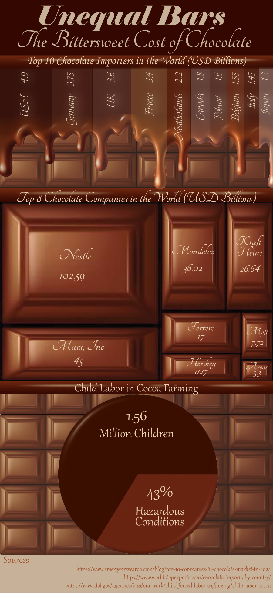
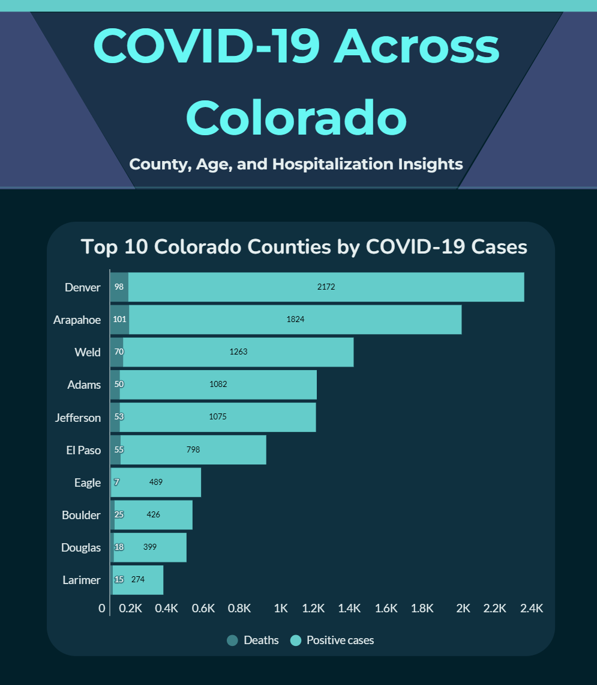
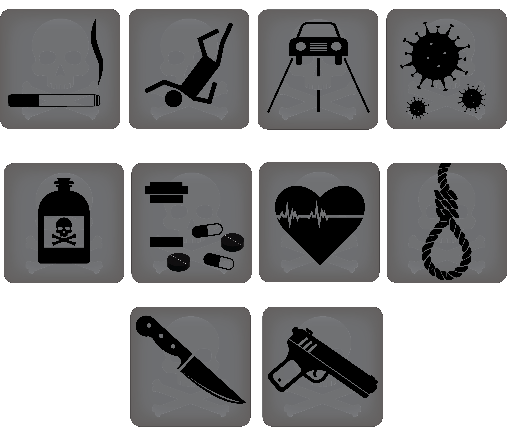
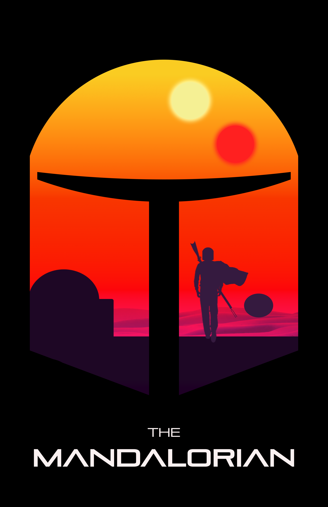

Design & Information Visualization
This section highlights proficiency in Adobe Illustrator and Adobe Photoshop for visual communication, data display (Infographics), and conceptual manipulation.
Information Science & Visual Assets

Infographic: Unequal Bars, The Bittersweet Cost of Chocolate
Design and execution of a complex, single-panel infographic to synthesize disconnected global data points. The visualization uses a rich chocolate metaphor to highlight three layers of data: Top Importers, Global Company Market Share, and the sobering reality of Child Labor in cocoa farming.
Illustrator
Data Visualization: CO Covid‑19 Interactive Infographic
Project leveraging Infogram to transform a complex dataset into an easily digestible, interactive infographic. Focus was placed on data synthesis and visual hierarchy to clearly present three key data points to the user via dynamic, explorable charts.
Infogram (External Site)
Icon Set: Causes of Death
A design study in iconography and visual clarity, representing causes of death (e.g., drowning, disease, poison) with minimalist, instantly recognizable symbols. The consistent color scheme and skull/crossbones motif ensure thematic unity and high-contrast legibility across the full set.
IllustratorCreative Manipulation & Compositing (Adobe Photoshop)

Conceptual Poster: The Mandalorian
Creation of a minimalist poster using vector graphics to capture the essence of a popular cultural property leveraging negative space and a bold, limited color palette to achieve immediate recognition and strong visual impact.
Photoshop
"A Night in the Dreams" Photo Series
A multi-image conceptual series created through complex photomontage and digital manipulation. Each piece layers disparate visual elements (e.g., astronomical environments, Las Vegas landmarks, personal portraits) to explore the relationship between internal dream states and external reality. Focus was placed on seamless blending and atmospheric lighting.
Photoshop